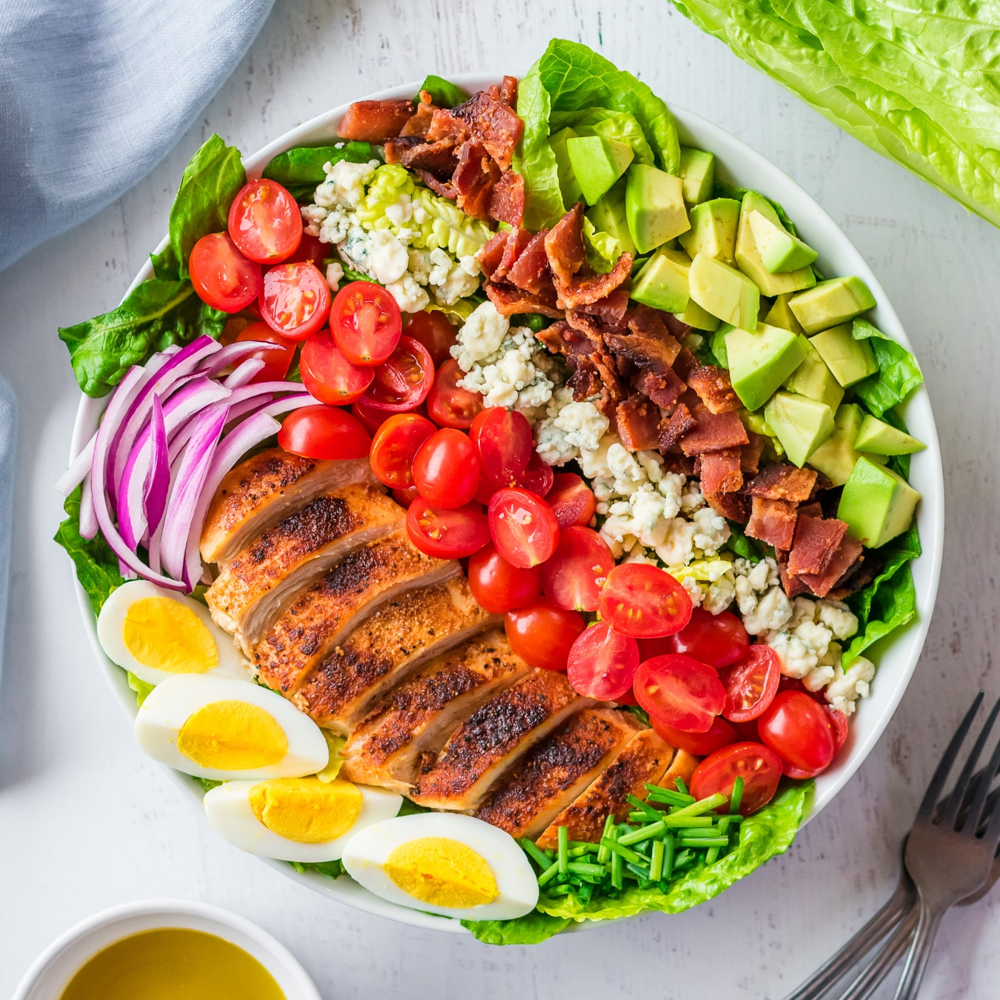

Cobb Salad

Description
Hey there, foodie! Want to make a classic American dish that’s both delicious and satisfying? Look no further than the Cobb salad. This iconic salad is packed with flavor and nutrients, and it’s perfect for a summer meal or a light lunch.
Ingredients
- 1 head of romaine lettuce, chopped
- 1 tomato, sliced
- 1/2 avocado, diced
- 1/4 cup crumbled blue cheese
- 2 hard-boiled eggs, sliced
- 4 slices bacon, cooked and crumbled
- 1/4 cup crumbled cooked chicken or fish
Dressing
- 3 tablespoons olive oil
- 2 tablespoons balsamic vinegar
- 1 teaspoon Dijon mustard
- 1/4 teaspoon salt
- 1/4 teaspoon black pepper
Steps
- In a large bowl, combine the lettuce, tomato, avocado, blue cheese, eggs, bacon, and chicken.
- In a small bowl, whisk together the olive oil, balsamic vinegar, Dijon mustard, salt, and pepper.
- Pour the dressing over the salad and toss to coat.
- Serve immediately and enjoy!
Go Back